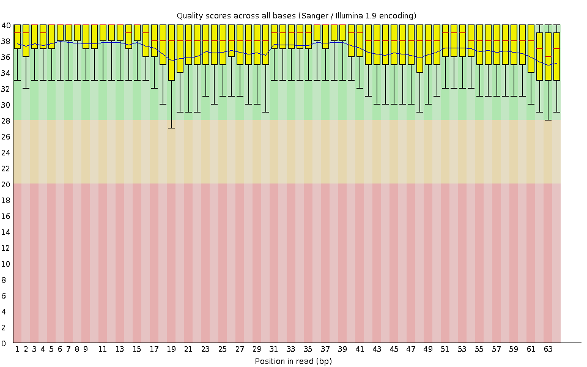
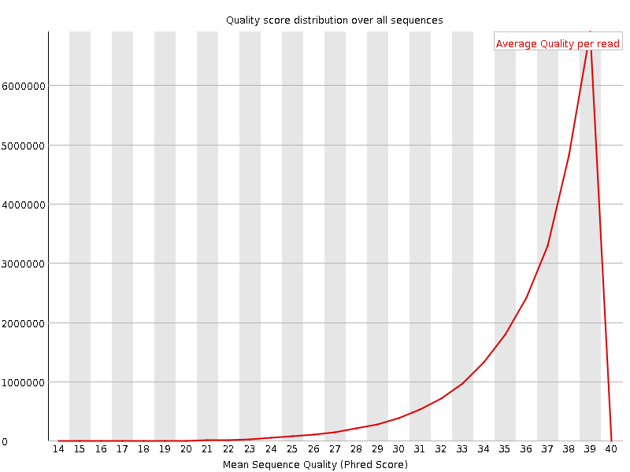
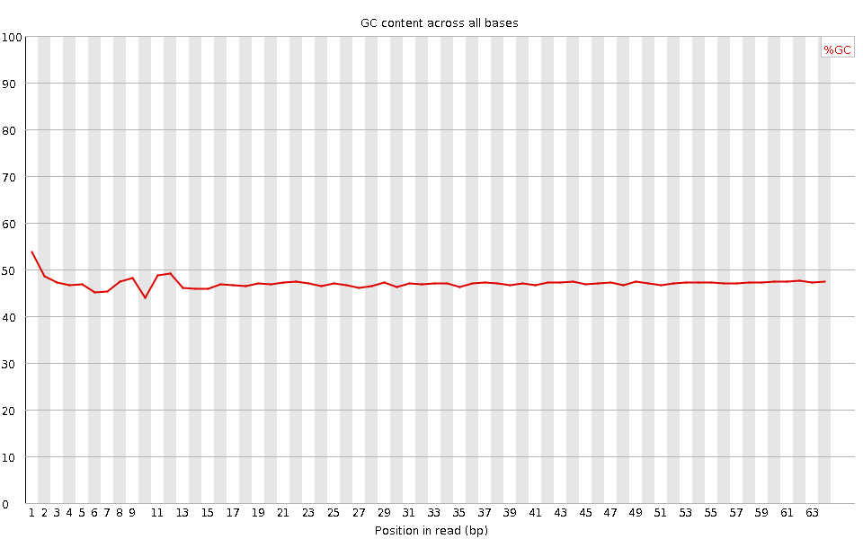
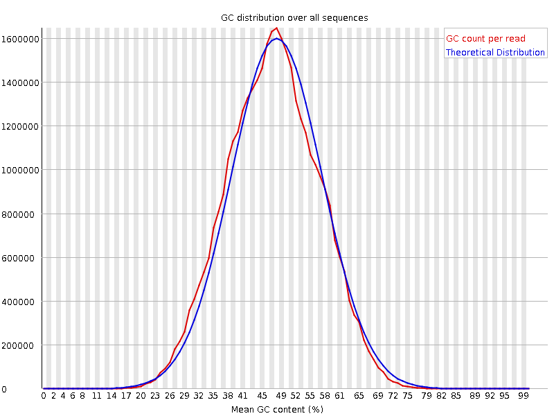
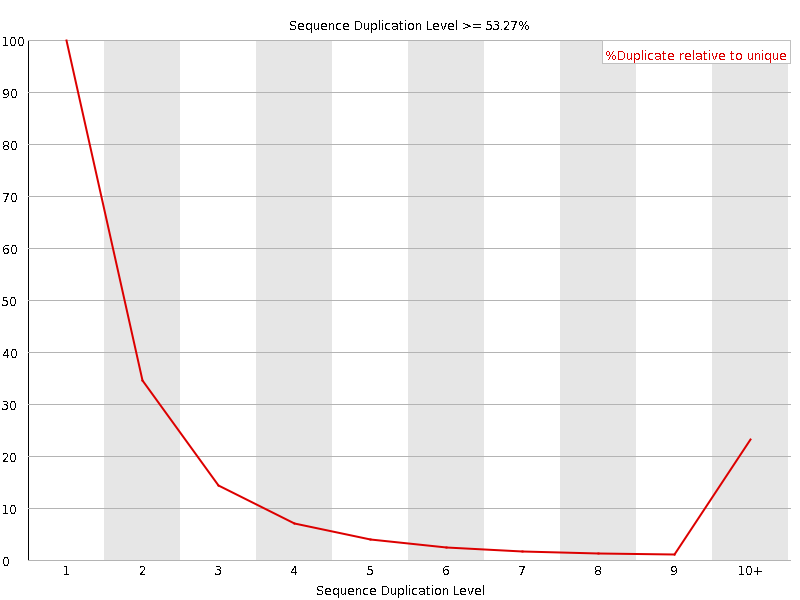
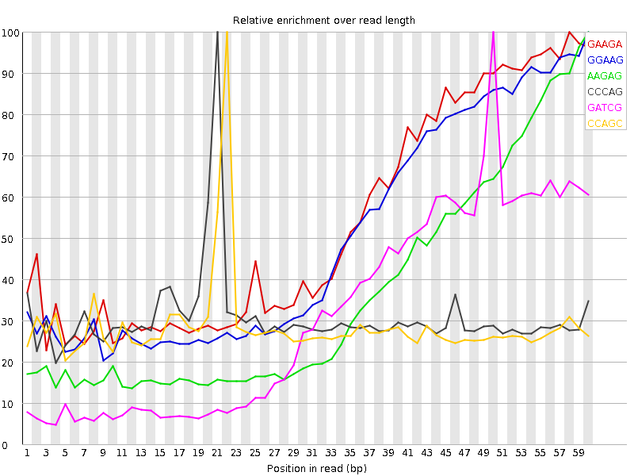

![[OK]](Icons/tick.png) Basic Statistics
Basic Statistics
| Measure | Value |
|---|---|
| Filename | SRR307922_pe_2.f.fastq |
| File type | Conventional base calls |
| Encoding | Sanger / Illumina 1.9 |
| Total Sequences | 24203201 |
| Filtered Sequences | 0 |
| Sequence length | 64 |
| %GC | 47 |
Per base sequence quality

Per sequence quality scores

![[WARN]](Icons/warning.png) Per base sequence content
Per base sequence content

Per base GC content

Per sequence GC content

Per base N content

Sequence Length Distribution

![[FAIL]](Icons/error.png) Sequence Duplication Levels
Sequence Duplication Levels

Overrepresented sequences
| Sequence | Count | Percentage | Possible Source |
|---|---|---|---|
| CGGTGGCGCGTGCCTGTAGTCCCAGCTACTCGGGAGGCTGAGGCTGGAGGATCGCTTGAGTCCA | 30764 | 0.12710715413221582 | No Hit |
Kmer Content

| Sequence | Count | Obs/Exp Overall | Obs/Exp Max | Max Obs/Exp Position |
|---|---|---|---|---|
| GAAGA | 3937695 | 2.7829742 | 5.188479 | 58 |
| GGAAG | 3533430 | 2.6586628 | 5.3170543 | 60 |
| AAGAG | 3348520 | 2.3665736 | 6.5253005 | 60 |
| CCCAG | 2375385 | 2.1353836 | 6.9393663 | 21 |
| GATCG | 2728375 | 2.013258 | 6.4188128 | 50 |
| CCAGC | 2124180 | 1.9095596 | 6.6583505 | 22 |
| GCCTG | 2269725 | 1.8529345 | 6.26482 | 12 |
| TGCCT | 2559345 | 1.8520504 | 5.9559383 | 11 |
| GGCTG | 2249290 | 1.7670158 | 5.807069 | 36 |
| GGAGG | 2107605 | 1.6883235 | 5.7938447 | 33 |
| TCCCA | 2080300 | 1.6576964 | 5.6419687 | 20 |
| CAGCT | 2157060 | 1.654053 | 5.686885 | 23 |
| CCTGT | 2150635 | 1.5562904 | 5.3161654 | 13 |
| CTGAG | 2094975 | 1.5458744 | 5.2544127 | 38 |
| GGTGG | 2029535 | 1.5342628 | 5.5989985 | 2 |
| GCTGA | 2031260 | 1.4988592 | 5.2404656 | 37 |
| GAGGC | 1711295 | 1.4245678 | 5.8295655 | 34 |
| AGGCT | 1902395 | 1.4037703 | 5.2347107 | 35 |
| GGGAG | 1731900 | 1.3873602 | 5.221886 | 32 |
| GTGGC | 1650150 | 1.2963386 | 5.5145946 | 3 |
| GTGCC | 1464400 | 1.1954917 | 5.614582 | 10 |
| AGTCC | 1455335 | 1.1159639 | 5.1787205 | 18 |
| GTCCC | 1178825 | 1.0000646 | 5.097778 | 19 |
| TGGCG | 1149685 | 0.90317905 | 5.535805 | 4 |
| GGCGC | 869630 | 0.8009109 | 5.635286 | 5 |
| CGTGC | 881555 | 0.7196747 | 5.029 | 9 |
| GCGCG | 524670 | 0.48321003 | 5.248751 | 6 |